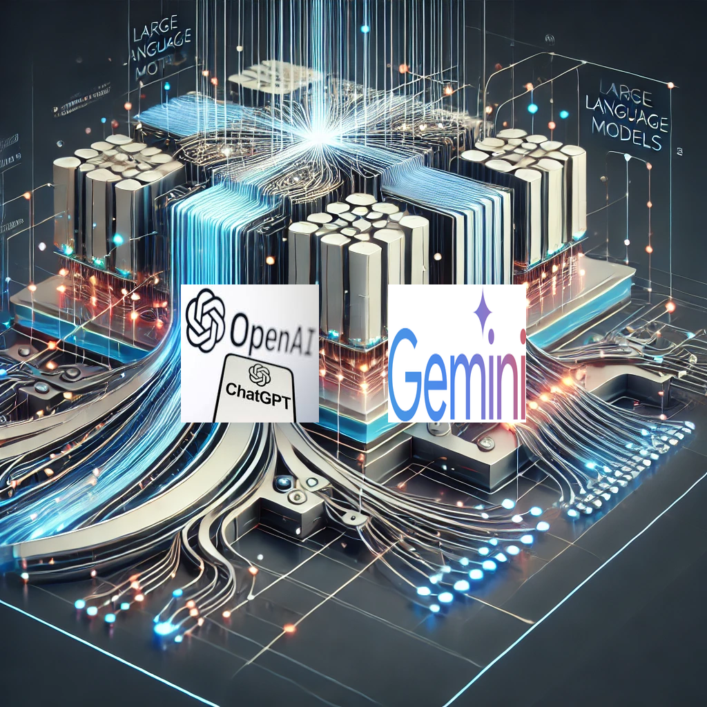

Chapitre 1 : Introduction à l’IA#
Aperçu
Ce chapitre introduit les concepts clés de l’intelligence artificielle (IA), son histoire, et ses premières applications. Il établit les bases nécessaires pour comprendre les développements modernes dans le domaine de l’IA.
1.1 Définitions#
L’IA est une discipline interdisciplinaire combinant l’informatique, les mathématiques, la linguistique, la psychologie et l’ingénierie. Elle vise à créer des systèmes capables de réaliser des tâches nécessitant normalement l’intelligence humaine.
Définition de John McCarthy
L’un des fondateurs de l’IA, John McCarthy, la définit comme « la science et l’ingénierie de la fabrication de machines intelligentes ». Cette définition montre la diversité d’approches que le domaine peut englober.
==> L’Intelligence Artificielle est donc un domaine multidisciplinaire de l’informatique visant à créer des systèmes capables d’effectuer des tâches qui nécessitent normalement l’intelligence humaine. Ces tâches incluent l’apprentissage, le raisonnement, la résolution de problèmes, la perception et la compréhension du langage naturel.
Composantes clés de la définition
Intelligence: Dans le contexte de l’IA, l’intelligence implique :
La capacité d’acquérir et d’appliquer des connaissances
L’aptitude à s’adapter à de nouvelles situations
La faculté de comprendre des concepts abstraits
La résolution de problèmes complexes
Artificiel: Le terme « artificiel » indique que cette intelligence est :
Créée par l’homme, non biologique
Implémentée dans des systèmes informatiques
Potentiellement différente dans sa nature et son fonctionnement de l’intelligence humaine
Comportement intelligent
L’IA vise à reproduire ou simuler des comportements considérés comme intelligents, tels que :
L’apprentissage à partir d’expériences
Le raisonnement logique
La planification et la prise de décision
La compréhension et la génération du langage
La perception visuelle et auditive
Approches principales
IA symbolique (ou GOFAI - Good Old-Fashioned AI):
Basée sur la manipulation de symboles et la logique formelle
Utilise des règles prédéfinies et des systèmes de raisonnement
IA connexionniste:
Fondée sur des réseaux de neurones artificiels
Apprend à partir de grandes quantités de données
IA hybride:
Combine les approches symboliques et connexionnistes
Vise à tirer parti des avantages de chaque approche
IA Faible (ou Étroite)#
Définition
L’IA Faible, également appelée IA Étroite ou IA Spécialisée (ANI - Artificial Narrow Intelligence), désigne des systèmes d’IA conçus et entraînés pour une tâche ou un domaine spécifique. Ces systèmes excellent dans leur domaine défini mais sont limités à celui-ci et ne peuvent pas s’adapter à des tâches différentes.
Caractéristiques clés
Spécialisation : Performante dans un domaine précis, mais incapable de transférer ses compétences à un autre domaine.
Absence de conscience : Ne possède pas de conscience de soi ou de compréhension générale.
Limites définies : Fonctionne uniquement dans les paramètres fixés par sa programmation.
Basée sur des données : Dépend fortement des données utilisées pour l’entraînement et les prédictions.
Apprentissage continu limité : Certaines IA faibles utilisent l’apprentissage en ligne, mais toujours dans un cadre limité.
Exemples concrets
Assistants vocaux : Siri (Apple), Alexa (Amazon), Google Assistant, tous capables de répondre à des questions spécifiques mais sans véritable compréhension du contexte global.
Moteurs de recommandation : Netflix, Spotify, Amazon, utilisant des algorithmes pour suggérer des contenus ou des produits basés sur les préférences des utilisateurs.
Systèmes de reconnaissance d’images : Face ID d’Apple, ou la technologie de reconnaissance faciale utilisée par Facebook et dans les applications de sécurité.
Jeux : DeepBlue (victoire contre Kasparov en échecs) et AlphaGo (victoire contre Lee Sedol au jeu de Go), des IA spécialisées conçues uniquement pour ces jeux.
Diagnostic médical : IBM Watson Oncologie, qui analyse des données médicales pour recommander des traitements.
Technologies sous-jacentes
Apprentissage automatique : Algorithmes apprenant à partir de données pour faire des prédictions ou prendre des décisions.
Traitement du langage naturel (NLP) : Compréhension et génération de langage humain, utilisée dans les chatbots et assistants vocaux.
Vision par ordinateur : Analyse d’images et reconnaissance de formes, couramment utilisée dans les systèmes de sécurité.
Systèmes experts : Utilisation de bases de connaissances pour imiter le raisonnement humain dans un domaine spécifique.
Limites
Manque de flexibilité : Ne peut pas apprendre ni effectuer des tâches en dehors de son domaine d’entraînement.
Dépendance aux données : La qualité de ses prédictions dépend entièrement des données disponibles.
Absence de compréhension contextuelle : Incapable de saisir la signification au-delà des données qu’elle traite.
Surveillance nécessaire : Nécessite une maintenance et des mises à jour régulières pour rester pertinente.
IA Forte (ou AGI)#
Définition
L’IA Forte, ou Intelligence Artificielle Générale (AGI - Artificial General Intelligence), est une hypothèse théorique d’une IA capable de comprendre, apprendre et s’adapter à toute tâche intellectuelle humaine. Contrairement à l’IA faible, l’IA forte aurait une intelligence polyvalente comparable à celle de l’humain.
Caractéristiques théoriques
Polyvalence : Capable d’accomplir toute tâche cognitive qu’un humain pourrait réaliser.
Conscience de soi : Hypothèse qu’elle pourrait développer une forme de conscience ou d’auto-réflexion.
Apprentissage autonome : Peut apprendre de manière indépendante sans entraînement spécifique préalable.
Raisonnement abstrait : Capacité à raisonner et à conceptualiser des idées complexes.
Adaptation : S’adapte à des situations nouvelles et imprévues sans nécessiter de reprogrammation.
Approches théoriques vers l’AGI (Intelligence Artificielle Générale)
Approche symbolique : Manipulation de symboles et utilisation de la logique pour simuler la pensée humaine.
Connexionnisme : Utilisation de réseaux neuronaux artificiels, inspirés du cerveau humain.
Approche hybride : Combinaison d’approches symboliques et connexionnistes.
Émulation du cerveau : Tentatives de reproduction du fonctionnement du cerveau humain à l’aide de modèles informatiques.
Défis majeurs
Compréhension du langage : Développer une maîtrise complète des nuances et du contexte linguistique.
Raisonnement de sens commun : Capacité à comprendre le monde comme un humain, avec toutes ses ambiguïtés.
Apprentissage cumulatif : Capacité à accumuler et à utiliser des connaissances au fil du temps.
Créativité et innovation : Générer des idées originales et résoudre des problèmes inédits.
Conscience et émotions : Comprendre et potentiellement reproduire des émotions humaines.
Implications éthiques et sociétales
Impact sur l’emploi : Potentiel remplacement de certains emplois humains, nécessitant une requalification de la main-d’œuvre.
Questions de sécurité : Risques liés à la création d’une IA incontrôlable.
Droits des entités IA : Débats sur la possibilité de reconnaître des droits à des IA conscientes.
Transformation sociétale : Changement profond de la structure de la société et de l’économie mondiale.
Comparaison IA Faible vs IA Forte#
Aspect |
IA Faible |
IA Forte |
|---|---|---|
Existence |
Réelle et utilisée largement |
Hypothétique |
Portée |
Limitée à des tâches spécifiques |
Universelle |
Conscience |
Absente |
Potentiellement présente |
Apprentissage |
Spécifique au domaine |
Autonome et généralisé |
Flexibilité |
Faible |
Très élevée |
Implications éthiques |
Modérées |
Profondes et complexes |
Réflexion critique
L’IA forte n’existe pas encore. La recherche actuelle se concentre principalement sur l’IA faible, qui est déjà omniprésente dans les technologies que nous utilisons chaque jour.
1.2 Histoire de l’Intelligence Artificielle#
Les Précurseurs (1940-1950)#
1943 : McCulloch et Pitts conçoivent un modèle de neurone artificiel.
1950 : Alan Turing propose le « Test de Turing ».
Naissance de l’IA (1950-1960)#
1956 : Conférence de Dartmouth, naissance officielle de l’IA.
1957 : Développement du Perceptron par Rosenblatt.
Période de Déclin
Dans les années 1970, le premier « hiver de l’IA » survient à cause des attentes irréalistes et du manque de progrès.
Renouveau et Avancées (1980-2010)#
Systèmes Experts : Utilisés dans le diagnostic médical et l’industrie.
Apprentissage Automatique : Émergence de nouveaux algorithmes comme les SVM et les réseaux de neurones.
1.3 Exemples Pionniers de l’IA#
{kind=link}
Jeux et Résolution de Problèmes
Deep Blue : Un jalon dans l’histoire de l’IA et des jeux:
Deep Blue est reconnu comme le premier ordinateur à battre un champion du monde d’échecs en match officiel, marquant une avancée majeure pour l’intelligence artificielle.
Contexte historique : Les échecs ont longtemps été perçus comme une épreuve ultime pour l’IA en raison de la complexité stratégique du jeu. Dès les années 1950, Claude Shannon et Alan Turing ont exploré l’idée de programmes capables de jouer aux échecs.
Évolution des programmes d’échecs :
1951 : Alan Turing développe le premier programme d’échecs sur papier.
1957 : Alex Bernstein crée le premier programme fonctionnel sur IBM 704.
1967 : Mac Hack VI devient le premier programme à battre un humain en tournoi.
1988 : Deep Thought, précurseur de Deep Blue, bat un grand maître international.
Origine du projet: Le projet Deep Blue, dirigé par Feng-hsiung Hsu et Murray Campbell, a débuté en 1985 sous le nom ChipTest à l’Université Carnegie Mellon, puis est devenu Deep Thought avant de se transformer en Deep Blue chez IBM.
Le match historique contre Garry Kasparov :
Premier match (1996):
Résultat : Kasparov gagne 4-2.
Impact : C’était la première fois qu’un ordinateur gagnait une partie contre un champion du monde en conditions de tournoi.
Match revanche (1997) :
Dates : 3-11 mai 1997.
Lieu : New York.
Résultat : Deep Blue gagne 3½-2½.
Déroulement :
Partie 1 : Victoire de Kasparov.
Partie 2 : Victoire de Deep Blue, un moment clé dans le match.
Parties 3 à 5 : Nulles.
Partie 6 : Deep Blue remporte la victoire décisive.
Controverse après la victoire
Après sa défaite, Kasparov a accusé IBM de tricherie en suggérant une intervention humaine lors du match. IBM a refusé de fournir les journaux détaillés des calculs, ce qui a alimenté les débats sur les limites de l’IA.
Impact sur l’IA et la perception publique : La victoire de Deep Blue a eu un impact majeur sur le domaine de l’IA :
Elle a prouvé que les ordinateurs pouvaient surpasser les humains dans des tâches complexes.
Le match a suscité des débats sur la nature de l’intelligence et les limites des machines.
Il a marqué un tournant dans la manière dont l’IA est perçue par le grand public et les chercheurs.
{kind=link}
Pionniers du Traitement du Langage Naturel
ELIZA et SHRDLU : Les premiers agents conversationnels et systèmes de compréhension
Ces deux programmes ont marqué des étapes importantes dans le domaine du traitement du langage naturel (NLP).
ELIZA : Le premier agent conversationnel
Contexte et création
ELIZA a été développée entre 1964 et 1966 par Joseph Weizenbaum au MIT. Elle est considérée comme le premier programme d’agent conversationnel (chatbot) de l’histoire. Weizenbaum souhaitait démontrer que les interactions humaines avec une machine pouvaient être simulées, même avec un algorithme simple.Fonctionnement et caractéristiques
Principe de base : ELIZA utilise la reconnaissance de motifs et la substitution de mots-clés pour générer des réponses.
Persona : Le programme imite un psychothérapeute rogérien, encourageant l’utilisateur à s’exprimer librement.
Technique principale : Utilisation de scripts prédéfinis pour analyser les entrées de l’utilisateur.
Exemples d’interaction
Human: Je suis triste.
ELIZA: Je suis désolé d’entendre que vous êtes triste. Pouvez-vous m’en dire plus sur ce qui vous rend triste ?
Limites d’ELIZA
ELIZA montrait rapidement ses limites dès que les interactions devenaient plus complexes, illustrant les défis du traitement du langage naturel.
SHRDLU : Un Système Avancé de Compréhension du Langage
Contexte et création
SHRDLU a été développé entre 1968 et 1970 par Terry Winograd au MIT. Il visait à démontrer qu’un ordinateur pouvait comprendre et exécuter des instructions en langage naturel dans un environnement contrôlé.Fonctionnement et caractéristiques
Mondes de blocs : SHRDLU opérait dans un environnement virtuel composé de blocs colorés.
Compréhension : Le système pouvait comprendre des phrases complexes comme :
« Place le cube rouge sur le cube bleu. »
« Quels blocs sont empilés ? »
Dialogue : SHRDLU pouvait répondre et interagir pour clarifier des instructions ambiguës.
Importance de SHRDLU
SHRDLU a démontré que des systèmes informatiques pouvaient simuler une compréhension linguistique, mais uniquement dans des environnements limités.
Impact d’ELIZA et SHRDLU sur le NLP : Ces deux systèmes ont posé les bases des développements modernes en traitement du langage naturel :
ELIZA a popularisé l’idée des chatbots.
SHRDLU a inspiré les recherches en dialogue homme-machine.
Ils ont mis en lumière les défis inhérents au NLP, en particulier la nécessité de traiter l’ambiguïté du langage humain.
{kind=link}
Robotique et Perception : Shakey et la Vision par Ordinateur
Shakey : Le premier robot mobile intelligent, et les débuts de la vision par ordinateur, deux jalons majeurs dans l’évolution de l’IA.
Shakey : Le premier robot mobile intelligent
Contexte et développement
Shakey a été développé entre 1966 et 1972 au Stanford Research Institute (SRI International) sous la direction de Charles Rosen. Il est reconnu comme le premier robot mobile capable de raisonner sur ses propres actions, posant les bases de la robotique autonome moderne.Caractéristiques techniques
Dimensions : Environ 2 mètres de haut
Équipement :
Caméra TV
Capteurs de distance
Capteurs de contact
Ordinateur : Connecté à un ordinateur SDS-940 via une liaison radio
Logiciel : Utilisait le langage de programmation STRIPS (Stanford Research Institute Problem Solver)
Capacités et innovations
Navigation autonome : Shakey pouvait planifier des itinéraires et naviguer dans des environnements complexes.
Perception visuelle : Il reconnaissait des objets simples et interprétait son environnement.
Planification d’actions : STRIPS lui permettait de décomposer des tâches en séquences d’actions simples.
Résolution de problèmes : Capable de résoudre des problèmes comme déplacer des objets d’une pièce à une autre.
Démonstrations célèbres
Allumer et éteindre des interrupteurs
Pousser des objets (comme des boîtes) d’une pièce à une autre
Naviguer autour d’obstacles imprévus
Impact et héritage de Shakey
Shakey a jeté les bases de nombreux domaines de la robotique et de l’IA :
La planification automatique
La cartographie et la localisation simultanées (SLAM)
L’intégration de multiples sous-systèmes d’IA
Vision par Ordinateur : Les Débuts de la Reconnaissance d’Objets
Contexte historique
Les années 1960 et 1970 ont vu les premiers efforts sérieux pour doter les ordinateurs de la capacité de « voir », ouvrant ainsi le champ de la vision par ordinateur.Premières approches et techniques
Analyse de bords et de contours :
Détecteur de Sobel (1968) : Irwin Sobel et Gary Feldman ont développé cet algorithme pour détecter les bords dans les images.
Opérateur de Prewitt (1970) : Judith Prewitt a proposé une méthode similaire pour la détection de contours.
Segmentation d’images :
Seuillage : Technique séparant les objets du fond en fonction de l’intensité des pixels.
Croissance de régions : Regroupement des pixels similaires en régions cohérentes.
Reconnaissance de formes :
Template Matching : Comparaison d’images avec des modèles prédéfinis.
Descripteurs de formes : Méthodes mathématiques comme les moments de Hu (1962) pour caractériser les formes.
Projets et systèmes pionniers
Le Monde des Blocs (1963-1972) : Développé par Larry Roberts au MIT pour reconnaître et modéliser des objets simples.
ACRONYM (1970s) : Projet de Rodney Brooks à Stanford, capable de reconnaître des objets 3D complexes.
VISION (1973-1982) : Dirigé par Takeo Kanade à CMU pour créer un système de vision complet pour la robotique.
Défis et limitations des premières approches
Sensibilité aux variations d’éclairage et de perspective
Difficulté à gérer les occlusions et les objets partiellement visibles
Manque de robustesse face à la variabilité des objets
Besoin de grandes puissances de calcul, limitées à l’époque
Impact sur la vision par ordinateur moderne
Les travaux pionniers dans la vision par ordinateur ont posé les bases des technologies modernes :
Réseaux de neurones convolutifs (CNN) dans les années 1980-1990
Reconnaissance faciale et conduite autonome aujourd’hui
1.4 Applications Récentes de l’IA#
{kind=link}
Grands Modèles de Langage (LLM)
Aperçu technologique :
Les LLM (Large Language Models) reposent sur des architectures de transformers, capables de traiter des milliards, voire des trillions de paramètres. Ils s’entraînent de manière non supervisée sur des corpus textuels massifs.Applications principales :
Génération de texte et dialogue : Exemples comme ChatGPT permettant des conversations fluides avec les utilisateurs.
Assistance à la programmation : Outils comme GitHub Copilot pour l’aide au développement de code.
Traduction automatique et analyse de sentiment : Transformation du traitement de texte en applications pratiques.
Impact socio-économique :
Révolution dans l’écriture, le service client et la programmation.
Défis éthiques : Propriété intellectuelle, gestion des biais et désinformation.
Impact éducatif : Redéfinition des compétences professionnelles et des méthodes d’enseignement.
{kind=link}
Systèmes de Défense et Drones Autonomes
Technologies clés :
Vision par ordinateur pour la reconnaissance de cibles.
Algorithmes autonomes : Prise de décision sans intervention humaine.
Coordination d’essaims de drones : Travail en coopération via IA.
Exemples d’application :
Drone Kargu-2 : Drone autonome avec capacités de suivi et d’engagement.
Iron Dome : Système d’interception de missiles piloté par IA.
Projet MAVEN : Utilisation de l’IA pour l’analyse d’images capturées par drones.
Implications stratégiques et éthiques :
Transformation des doctrines militaires.
Débats éthiques : Responsabilité des décisions prises par les systèmes autonomes.
Nécessité de régulation : Développement de cadres juridiques internationaux.
{kind=link}
Internet des Objets (IoT) et Villes Intelligentes
Infrastructure technologique :
Capteurs interconnectés pour la collecte de données en temps réel.
Analyse dynamique via des plateformes intégrées pour la gestion urbaine.
Étude de cas : Gestion du Trafic à Singapour :
Composants du système :
Réseau de 1000 capteurs sur les axes principaux.
Caméras intelligentes avec traitement en temps réel.
Feux de circulation adaptatifs basés sur les flux de trafic.
Fonctionnement :
Collecte et analyse prédictive par IA.
Ajustement dynamique des feux.
Diffusion d’informations aux usagers.
Résultats :
Réduction de 20% des temps de trajet.
Baisse de 15% des émissions de CO2.
Défis et perspectives :
Optimisation des ressources urbaines.
Cybersécurité et protection des données personnelles.
Amélioration de la qualité de vie urbaine.